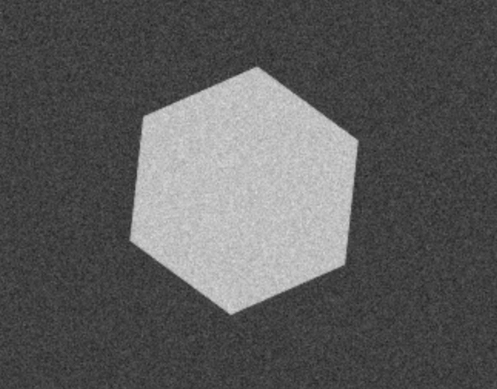

Image Filter
Path to image:
Filter:
The Otsu Method
Adaptive threshold processing method
Element-by-element image stacking with a blue channel
Element-by-element multiplication of an image by a mask
Linear image contrast
Processed Image
